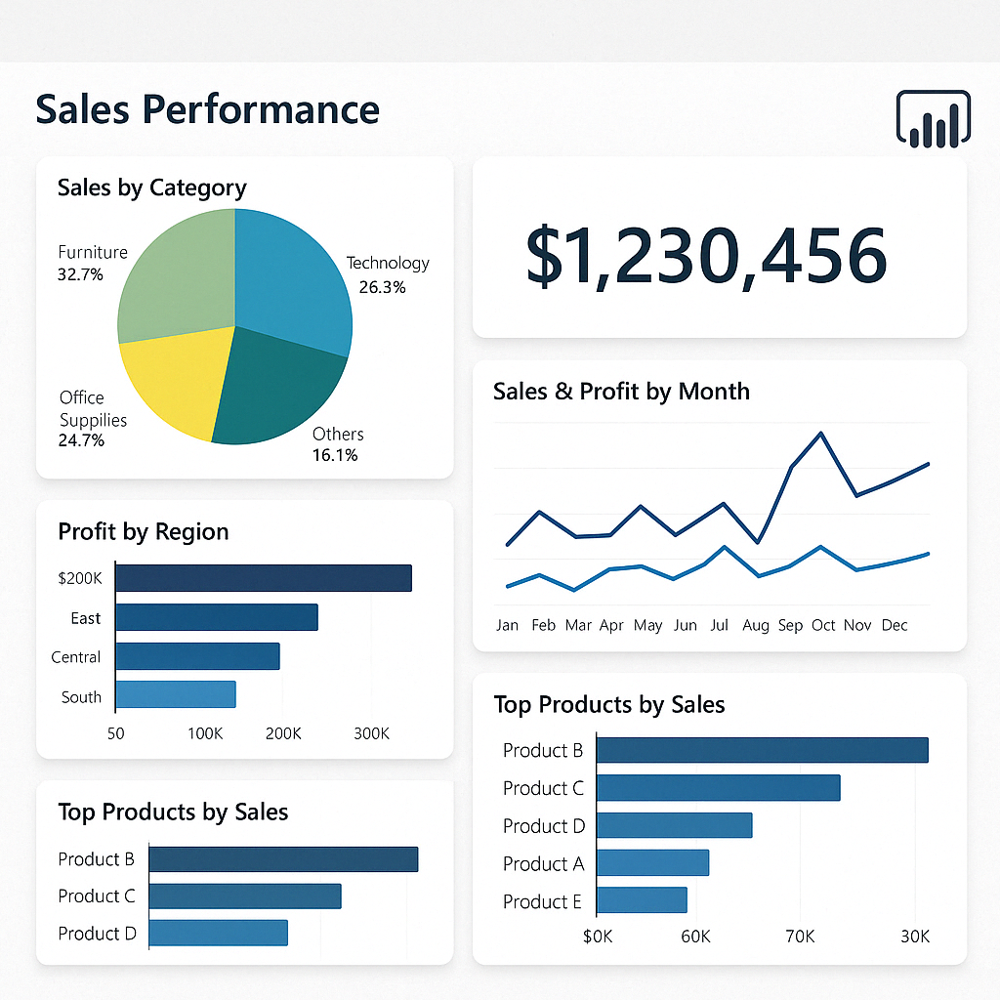
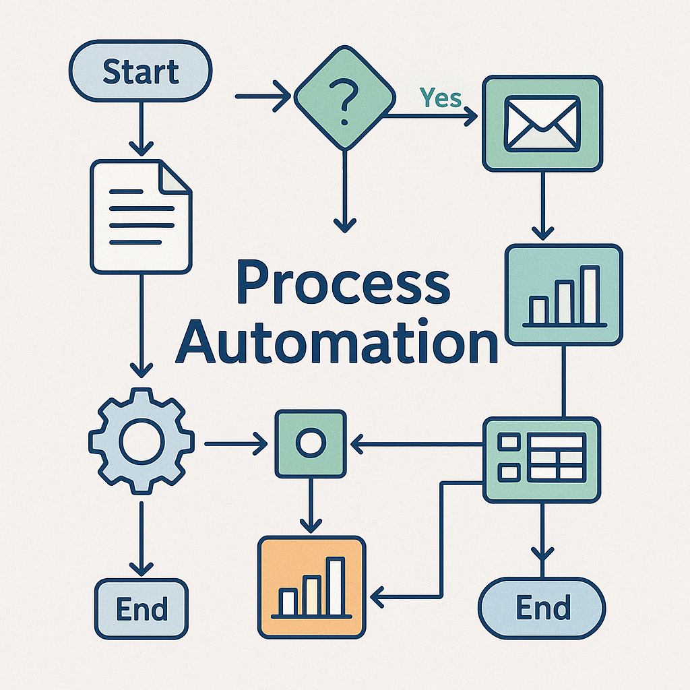
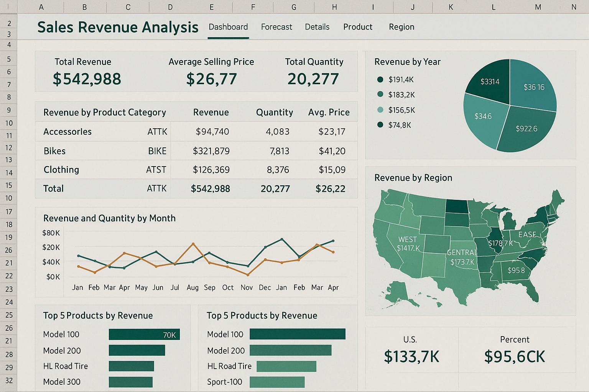

Serviços Oferecidos

Dashboards em Power BI

Previsão de Evasão de Clientes

Modelos Preditivos Para Diferentes Aplicações

Fluxo de Automação

Treinamentos em Python, Excel, SQL e Power BI

Planilha de Análises Avançadas em Excel